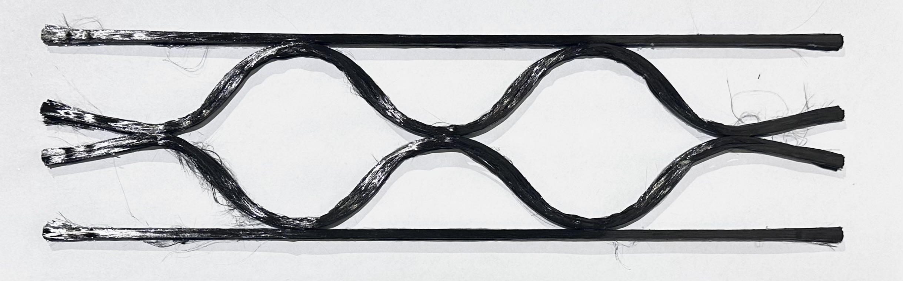
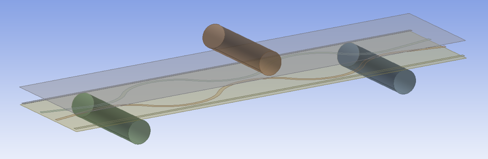
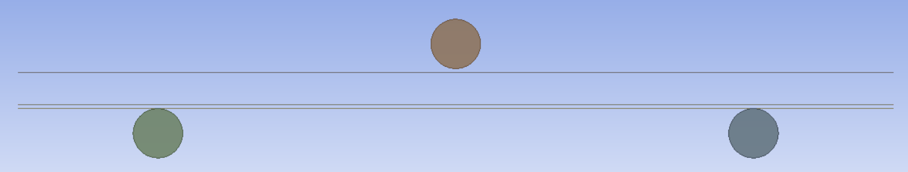
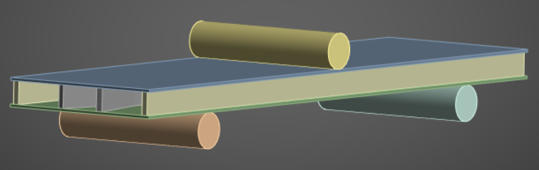
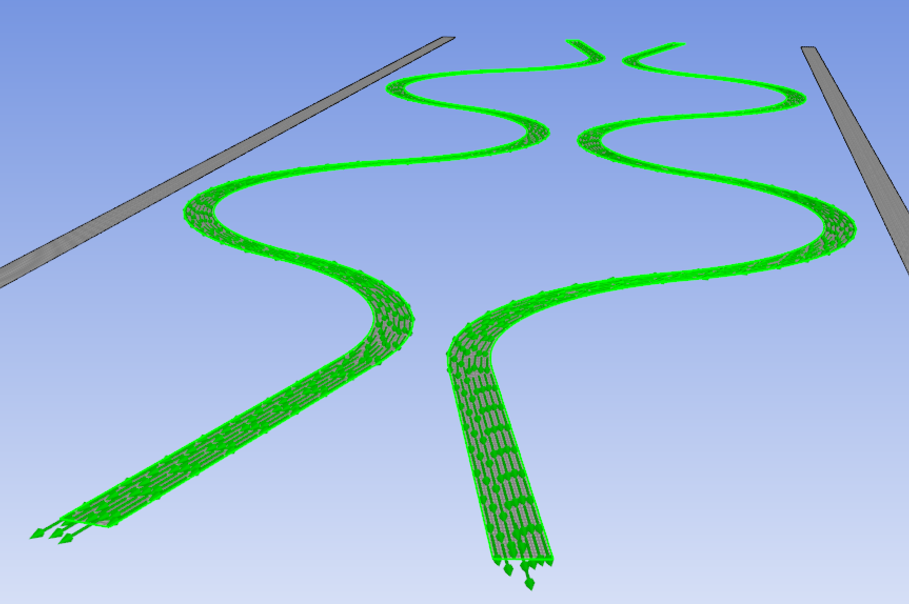
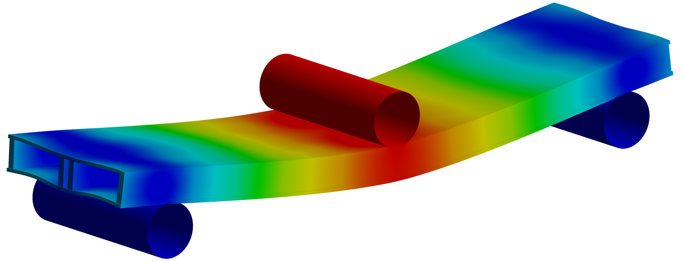
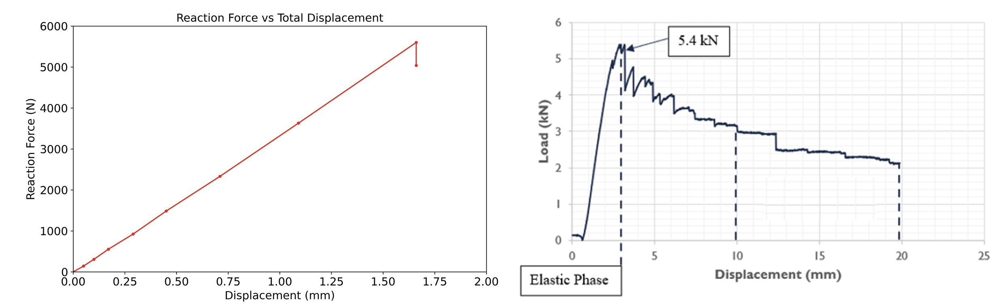
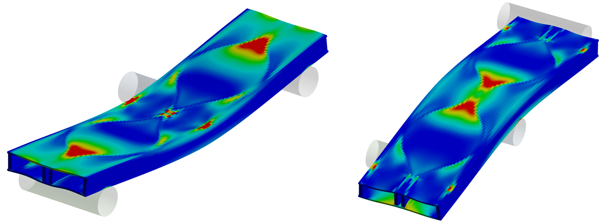

ANSYS ACP & Mechanical · FEA
Composite Sandwich FEA: Validating a Three-Point Bend Test
- Objective
- Model a three-point bend test of a 3D-printed carbon fiber sandwich panel and see whether FEA matches the measured peak load and failure locations.
- Tools
- ANSYS ACP, ANSYS Mechanical, Siemens NX.
- Role
- Built the model and ran the analysis. The physical tests were done earlier in the lab, so the experimental data was already set before I started modeling.
- Result
- FEA predicted 5.6 kN at 1.66 mm deflection against a measured 5.4 kN at 2.5 mm, within 3.7% on peak load. Tsai-Wu failure locations matched the physical specimen.
Problem
Composite sandwich panels fail in ways that are hard to predict by hand, like delamination at the core-skin interface and local ply failure. Physical testing shows this behavior but destroys a specimen every time, which makes trying new core designs slow and expensive.
If FEA can match a test that has already been run, it can be used to screen new core geometries without printing and breaking a panel for each one. This project models a three-point bend test of a sandwich panel with a sinusoidal core, printed on a CF3D continuous fiber printer, and compares the results to test data collected earlier in the lab. Since that data existed before I built the model, I could not tune the model to match it.

Method
Geometry
The core, skins, and bend test pins were modeled in NX as surfaces, with composite thickness added later in ACP. The surfaces were offset vertically by the exact ply thickness that would be applied, so the finished solid model has the parts in contact instead of overlapping or floating apart.



The core was scaled to the tested specimen: 304.8 mm long, 254 mm support span, 25.4 mm steel pins. The original CAD has a gap between the sinusoidal and straight core sections, but the printer tolerance means those parts touch in the real panel, so the gap was reduced to 0.1 mm. That is close enough for ANSYS to treat them as in contact, which matters for capturing debonding between them.
Layup
The layup was defined in ACP with the top skin, bottom skin, and core in separate modules so each could have its own coordinate system and fiber direction. Both skins use 7 plies at 0 degrees, 0.225 mm per ply, matching the printer, for 1.575 mm total. The core is 58 plies at 13.05 mm.
The core fiber direction follows the sinusoid instead of one global direction. To set this up, named selections were made for each sinusoidal edge in Mechanical, then used as edge sets in ACP to define the reference direction along the curve. Ply properties came from Toray T-1100 12K tow data, and the cohesive interface used resin properties from published data on the same printing process.

Contacts and loading
The core-to-skin interface is bonded with contact debonding using a bilinear cohesive zone model, so delamination can actually happen instead of being ruled out from the start. It uses a pure penalty formulation, which converges more easily but allows some interpenetration.
The pins use frictionless contact so the fixture does not add stiffness the real test would not have, with an augmented Lagrange formulation for better accuracy between the two different materials.
Load is applied as a 1.66 mm displacement on the top pin with the support pins fixed. Early runs showed the panel sliding sideways out of the fixture, which is not physical, so I added a second remote displacement to constrain lateral motion while still letting the panel bend freely.
Results
The predicted deformation is smooth and symmetric, with the maximum deflection under the loading pin at mid-span and near zero at the supports. There is no noticeable twisting out of the bending plane, which means the core-skin bond holds up to peak load.

The model stays linear up to 1.66 mm of deflection and peaks at 5.6 kN before the reaction force drops off. The physical test peaked at 5.4 kN at 2.5 mm. Peak load agrees within 3.7%, but the model gets there 0.84 mm earlier, so the simulated panel is stiffer than the real one.

Failure was checked with the Tsai-Wu criterion, which predicts failure once its value reaches 1. The model peaks at 1.2, with failure at the pin contacts and where the sinusoidal core sections touch each other or the skins. These are the same locations where the physical specimen failed, including on the bottom surface near mid-span.

Conclusion
The model matched peak load within 3.7% and predicted failure in the same places as the physical test. That is close enough to use FEA for screening core designs before printing and testing them.
The bigger takeaway is where it disagreed. The model is stiffer than the real panel and peaks 0.84 mm early, which comes from assumptions the printed part does not meet: idealized core geometry, uniform ply properties, and a perfect core-skin bond. Fig. 1 shows the gap directly, since the printed tows vary in width and pile up where the sinusoids cross, while the model treats every ply as identical. The pure penalty contact also allows some interpenetration, which adds compliance that is hard to quantify. I also did not run a mesh-convergence study, so the discretization error here is unknown. Closing the deflection gap would mean adding geometric variation and real material scatter to the model, not just changing solver settings.